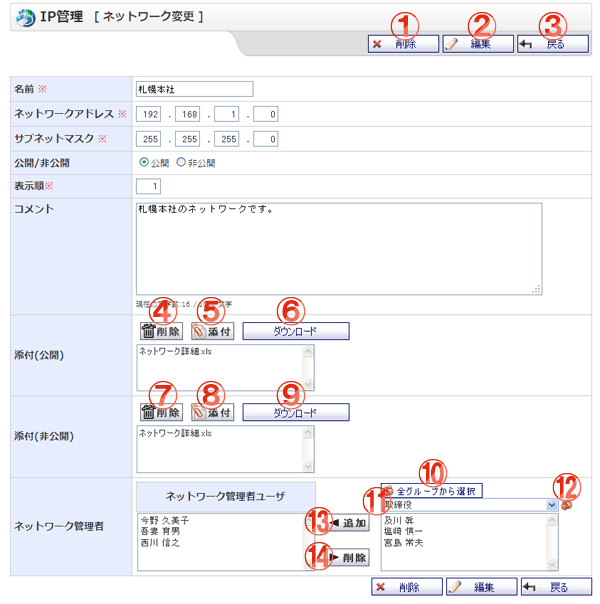

ネットワークを編集する画面です。

機能説明
削除ボタン削除確認画面へ遷移します。ネットワークを削除します。 |
編集ボタンネットワーク編集確認画面へ遷移します。 |
|---|---|
戻るボタン遷移元画面へ遷移します。 |
削除ボタン（添付ファイル公開）公開添付のリストで選択中の添付ファイルを削除します。 |
添付ボタン（添付ファイル公開）添付ファイル選択画面をポップアップで表示します。ファイルを選択し、 確定すると添付のリストに選択したファイル名が追加されます。 |
ダウンロードボタン（添付ファイル公開）添付のリストで選択中の添付ファイルをダウンロードします。 |
削除ボタン（添付ファイル非公開）添付のリストで選択中の添付ファイルを削除します。 |
添付ボタン（添付ファイル非公開）添付ファイル選択画面をポップアップで表示します。ファイルを選択し、 確定すると添付のリストに選択したファイル名が追加されます。 |
ダウンロードボタン（添付ファイル非公開）添付のリストで選択中の添付ファイルをダウンロードします。 |
全グループから選択ボタンポップアップで全グループから選択画面が開きます。 |
グループコンボ選択したグループに所属するユーザがユーザリストに表示されます （すでにネットワーク管理者リストに追加されているユーザは表示されません）。 |
グループボタンポップアップでグループ選択画面が開きます。 |
追加ボタン（ネットワーク管理者）ユーザリストで選択されているユーザを、ネットワーク管理者リストに追加します。 |
削除ボタン（ネットワーク管理者）ネットワーク管理者リストで選択されているユーザを、ネットワーク管理者リストから除外します。 |
表示・入力項目説明
名前
ネットワーク名を入力します（50文字以内）。
ネットワークアドレス
ネットワークアドレスを入力します（255以下の数字）。
サブネットマスク
サブネットマスクを入力します（255以下の数字）。
公開/非公開
ネットワークの公開・非公開を選択ます。
表示順
ネットワーク一覧画面での表示順を入力します（3文字以内）
コメント
コメントを入力します（1000文字以内）。
添付(公開)
添付するファイルを選択します（全ユーザが閲覧可能な添付です）。
添付(非公開)
添付するファイルを選択します（ネットワーク管理者以上の権限がないユーザは閲覧できません）。
ネットワーク管理者
ネットワークの管理者として設定するユーザを、ユーザリストから選択し追加します。